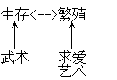

生存<==>繁殖
你是一部生物机器，这辈子的目标很简单但并不单纯：活下去，并且去爱。为了成功地异种交配，你必须了解目前并没有革命性的医学奇迹，总有一天你还是会挂掉。
问题：不要计算，凭感觉作答——你认为美国人的平均寿命有几天？
A.几万天
B.十万天
C.几百万天
D.几十亿天
选好答案之后再看下去。
答案：（A）几万天。事实上，准确数字只有28251天①。
平均而言，你有28251天度过这一生。即使你能活到一百岁，还是只有36500天而已。
这个宇宙只要求你做两件事：好好活下去并且繁衍子孙。你的挑战就是在有限寿命自然终结之前生下后代。
最合逻辑的行为模式很简单：
*借由训练与专注，体认到加速学习曲线的需要；
*向别人学习有用的生存与繁殖策略；
*接着练习与训练，把这些知识内化成本能反应，应用在现实生活中。
有很多方法可以帮助你生存，其中一种就是学习武术：也有很多方法可以帮你繁殖，其中一种就是学习求爱艺术。

武术（The Martial Arts，战争的艺术）其实是自卫的艺术，也是有助于生存的训练。
MARTIAL：（罗马的战神）属于、关于或适合战争或战士的。
求爱艺术（The Venusian Arts，爱情的艺术）是认识陌生女人并且成功跟她展开亲密关系的艺术，也是有助于繁殖的训练。
VENUSIAN：属于或关于金星的、罗马的爱与美的女神。